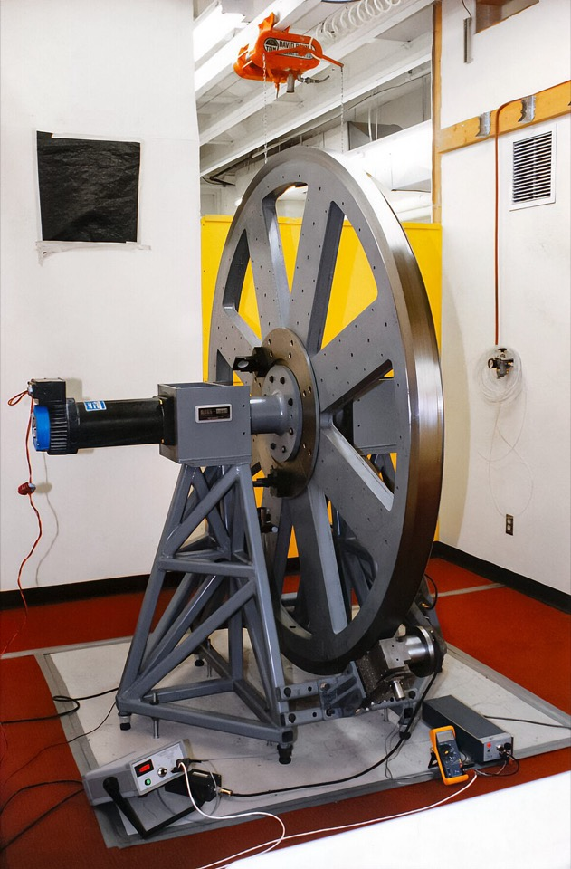

Robot motion, coordinate frames and encoder feedback
A controller commands a movement, an encoder measures part of it, and the real tool lands somewhere in space. Each quantity needs its own frame, units and interpretation.
A robot measures a coordinate from a reference
A joint angle is measured from its configured zero. A point in task space is measured in a frame, with an origin and axes. An arm can report a consistent joint reading but place a tool incorrectly after a bracket or tool change. In the two-link example the end position is the sum of two rotated vectors. Joint 2 adds its angle to Joint 1 for the second vector.

Photo by International Gemini Observatory/NOIRLab/NSF/AURA, scaled for the course. Original · CC BY 4.0.
.jpg){kind=link}

Photo by oomlout, resized. Original photo · CC BY-SA 2.0.


Photo by Lexington Medical, Inc, scaled for the course. Original · CC0.

Watch on YouTube · Watch how joint motions combine to define the tool pose. The planar two-link exercise applies the same idea to a simpler arm. Modern Robotics, Chapter 4: Forward Kinematics Example · Northwestern Robotics.
Quadrature tells you direction and distance
An incremental encoder produces two repeating signals A and B offset in phase. Logic can count edges and use their order to assign direction. If a specification means 12 cycles per motor revolution per channel, a decoder counting both edges of both channels yields 48 counts per motor revolution. A vendor may already specify decoded counts, so read its definition before multiplying.
At 50 motor revolutions per wheel revolution, the hypothetical count is 2,400 per wheel turn. A 65 mm wheel covers 204.2 mm per turn before slip. A count change of 600 then models 51.1 mm of motion. An incremental counter generally needs a new reference after loss of position. Many absolute encoders report a coded angle even after power is restored, within their specified range.
Accuracy, repeatability and constraints
A machine that reaches the same wrong spot is repeatable and miscalibrated. A different position depending on approach can come from backlash. Lifted wheels are a clean test of encoder sign, while wheel slip means floor distance and wheel counts can disagree. The controller can compare commanded and measured quantities if units, frame and time align.
Look for which error follows a sensor, which follows an axis, and which follows the load. Compare the powered commands, physical motion and reported positions separately. Modern Robotics · Forward kinematics · Romi encoder documentation.